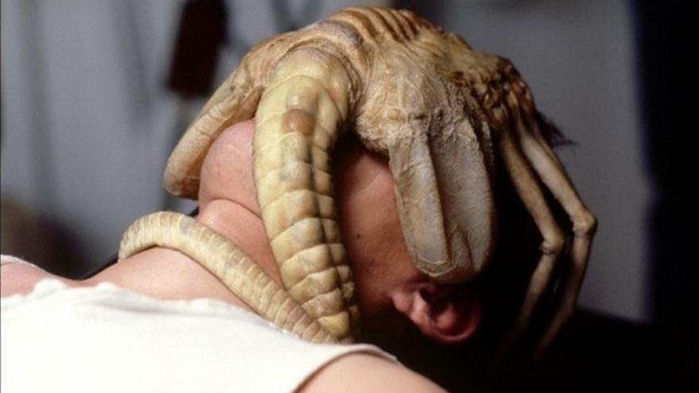
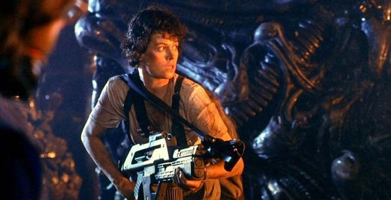
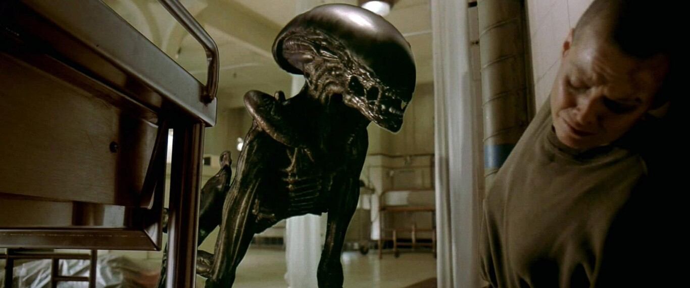
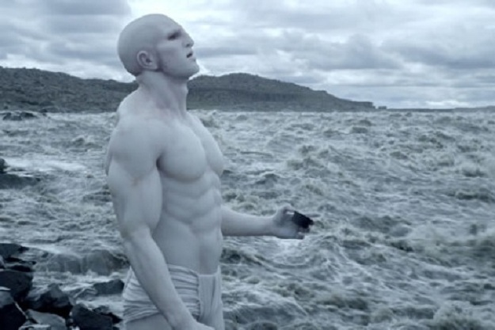
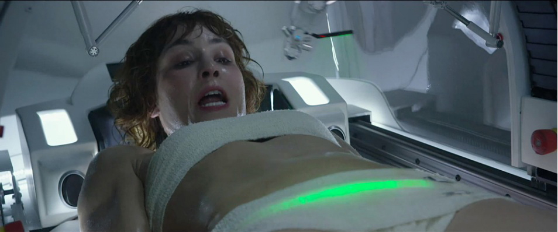
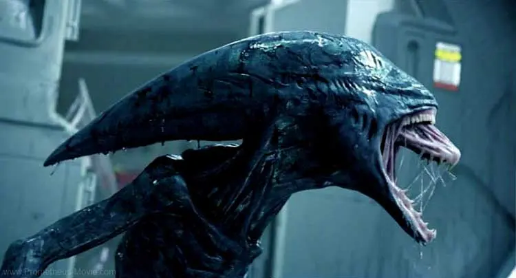
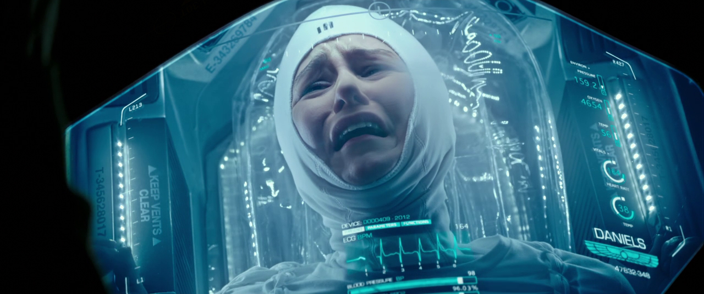

Cuando se estrenó ‘Alien’ en 1979 nadie se podría imaginar que se convertiría en una saga tan longeva tanto en cintas como en años.
La película más reciente es ‘Alíen: Covenant’ siendo esta de 2017 y además para el 2024 se espera otra entrega aun solo conocida como ‘Alíen: Romulus’.
Para un fan de esta increíble saga o simplemente del cine en general, resulta muy complicado elegir unas pocas escenas o momentos dentro de un metraje tan largo y
lleno de momentos tan increíbles, impactantes o rompedores como los que atesora la saga de Alíen.
Aun así, esta es una pequeña selección que en nuestra humilde opinión atesora los grandes momentos de las películas de la saga.

La escena empieza con Ash abriendo el casco espacial de Kane mientras Dallas observa. Seguidamente se descubre el aun
en aquel momento, un absoluto desconocido xenomorfo enganchado a la cara. Dallas decide definitivamente extraerle el
abrazacaras a Kane. Ash (que es un androide pero aún no se sabe), con un bisturí intenta cortarle una de las patas.
Al hacer la primera incisión, surge un líquido que arrasa con todo a su paso que a poco esta de agujerear la nave.
Como comentamos antes, seleccionar una única escena dentro de un clásico imperecedero como 'El octavo pasajero'
es muy difícil, pese a todo, ninguna igualará al mítico chestburster abriéndose paso a través del pecho de Kane.
Esta imagen, que ha pasado a los anales del séptimo arte, destaca por ser, probablemente, la instantánea que más
se ha grabado en la memoria de todo espectador de la película.
Dice la leyenda que James Cameron al poco de estrenar ‘Terminator’,
se presentó con las manos vacías a la reunión con algunos de los ejecutivos más importantes de la industria,
avanzo a la pizarra y escribió la palabra “ALIEN”. Acto seguido añadió una “S” que acabo adornando con los dos palitos que
conforman el símbolo del dólar. El resto es historia.
Detrás del eterno debate de que peli de Alien es la mejor, si ‘Alien’ o ‘Aliens’ no se puede olvidar que son muy diferentes.
En esta segunda parte después de un comienzo donde se nos prepara para lo que vendrá con cierta calma, todo empieza acelerar
cuando al poco de la llegada al planeta LV-426 descubren que todos los colonos parecen estar concentrados en una misma zona.
Los marines son enviados a rescatarlos y a pesar de los avisos de Ripley estos irán directos a la colmena de los Aliens.

Newt ha sido secuestrada por un Alíen y ya sabemos que sucederá con ella. Ripley qua a esas alturas es la líder indiscutible
del grupo, le pide a Bishop que prepare la nave para irse en cuanto vuelva o que se vayan sin ellas. Coge todas las armas que
tiene a mano y va en búsca de Newt. El encuentro con la Reyna, el campo de huevos, la persecución... De las mejores escenas de
la saga con una atmosfera insoportable.
La gran pelea final. Desde que la teniente encuentra —y fríe— el nido de huevos, la cinta nos deja el corazón en un puño durante
un clímax espectacular que ha dejado para la posteridad la imagen de la protagonista pilotando el power loader y entonando el antológico
“get away from her, you bitch!”. Pura gloria del cine de los ochenta.

Con todos sus altibajos es en la versión del director donde encontramos la mejor ‘Alien³’, dirigida por un aun novato David Fincher (‘Seven’,
‘El Club de la lucha’), nos devuelve a la esencia de la Alien original con mucha más crudeza.
Ripley esta acorralada en la enfermería. El alien, nacido de un perro, le perdona la vida al percibir que lleva dentro a uno de ellos, no sin antes advertirle
al más puro estilo xenomorfo. Sin respiración…

El regreso de Ridley Scott auguraba grandes hitos para la franquicia y a pesar que para muchos las expectativas no se cumplieron es indiscutible
que el metraje está lleno de grandes momentos.
Empieza la escena con la llegada del arquitecto a un acantilado. En el horizonte vemos una nave a lo lejos que se aleja, mediante un artilugio
extraño el arquitecto se sacrifica en lo que fácilmente se intuye, gracias a las imágenes, como el comienzo de la vida en el planeta.

El aborto alienígena supone la culminación de una argumentación perfectamente construida, con un David que empieza a mostrar sus cartas y una Doctora
Shaw que comienza a comprender que todo no es tan idílico como se pensaba.
Shaw descubre estar embarazada por una criatura extraterrestre, este crece descotrolado dentro de ella y parte de la tripulación parece más interesada en experimentar
con ella que en ayudarle. Tanto la preparación del procedimiento como la intervención en sí, están filmadas con un pulso envidiable y una crudeza estremecedora, alcanzando
su punto álgido al revelar el hijo indeseado de la doctora, cuyos viscosos tentáculos se agitan vehementemente revolviendo las tripas del espectador más aguerrido.

Tarda todo el metraje de la cinta pero justo al final podemos ver a lo que parece ya un alien nacido de un arquitecto y comprendemos que todo esto es el principio de los
xenomorfos que todos conocemos.

Queda claro que 'Alien: Covenant' es de las versiones más pobres del universo que iniciaron Scott y Bannon hace 45 años. Sus personajes parece que no estén en sus
cabales, su trama es una sucesión de disparates sin pies ni cabeza y sus ínfulas de trascender terminan eclipsando su buen hacer en lo que respecta al
terror y la acción.
Con todo eso nos quedamos con la escena que va inmediatamente después de que la lanzadera explote. Daniels y el resto de la tripulación restante observan estupefactos
como han perdido su billete de salida cuando uno de ellos empieza a convulsionar violentamente hasta que de su espalda surge un alien. Por si no fuera poco desde la
oscuridad aparece otro xenomorfo adulto que les ataca sin piedad.
Por suerte o no para ellos aparece un desconocido que les hace huir.

Por fin han conseguido escapar de ese planeta horrible y lo que queda de la tripulación se prepara para invernar otra vez. Justo al final Walter está ayudando a
Daniels para la hibernación y justo antes de que se cierre la puerta le hace una pregunta que solo el sabría. Al ver su cara de extrañeza comprende que no es Walter
si no David quien sobrevivió al planeta y que esa es su sentencia de muerte.
Las mejores?
Cada persona, cada espectador, es un mundo, y la selección de las secuencias tratadas en este artículo ha estado condicionada única
y exclusivamente por las fobias, las filias, y la experiencia con los filmes mencionados del que suscribe.
Probablemente, a lo largo de la, hasta el momento, hexalogía 'Alien', haya muchos pasajes con mayor peso argumental, mejor ejecución y mayor interés que los
anteriores; pero lo que es innegable es que la franquicia ha regalado al respetable un imaginario, y un repertorio de recuerdos para la posteridad más
grande de lo que, probablemente, ni los propios Ridley Scott y Dan O’Bannon soñasen en el ya lejano 1978.